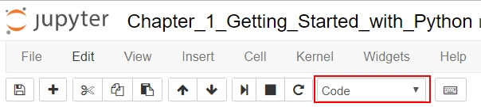
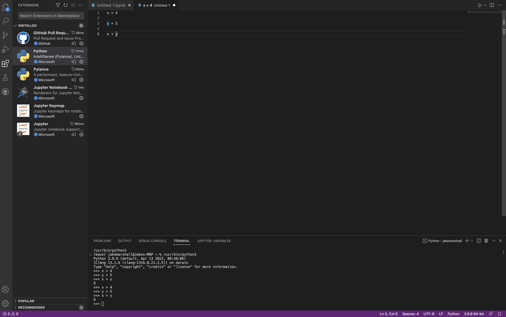
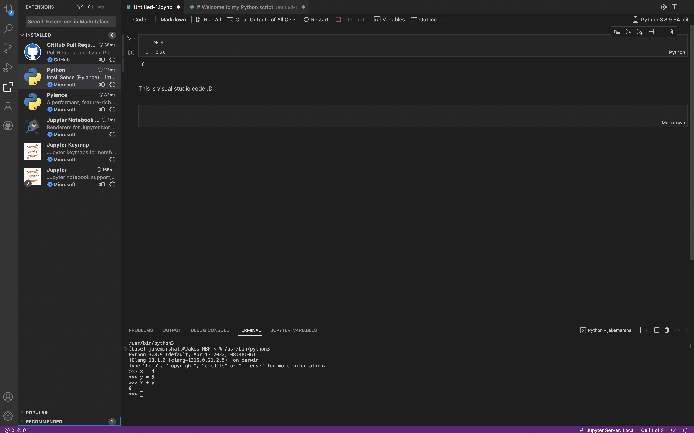

Chapter One - Getting Started with python

This is a HTML document. The Introduction to Python course is written and intended to be used in a Jupyter Notebook file. These HTML documents have been made available for users who require screen readers or have other accessibility needs. These HTML documents have been tested and run through a correction process courtesy of the accessrmd package (git repo here). However, there are issues that can elude this package, so if you notice any errors or any compatibility issues please contact us at the Data Science Campus Faculty inbox from the link above, so that this can be logged for review.
If you are using a screen reader you will need to set your punctuation level (sometimes called verbosity) to full, especially for the code sections.
As you progress through these training materials, please run the code as you encounter it as this will preserve the flow of the course itself.
Chapter Overview/ Learning Objectives
-
- Creating a blank file
- Cells
- Markdown Cells
- Working with a new notebook
- Settings
- Fonts
- Saving Notebooks
- Saving Notebooks to Share
1 Background of Python
Python was created by Guido van Rossum and first released in 1991. It was named this way as a reference to Monty Python’s Flying Circus, which you can be sure will be referenced throughout the course (how could we not!). It is a general-purpose programming language that has four key aims:
- An easy and intuitive programming language that’s still powerful in performance.
- Open source (so anyone can contribute to the development).
- Understandable in plain English (this is often referred to as ‘readable’).
- Suitable for everyday tasks, which allows for short development times when compared with other languages.
By learning Python you’re in good company, as in 2022 Quarter 1 GitHub ranked it as the most commonly used language and many websites list it as a key tool to learn for Data Science.
Due to Python’s open source nature there’s a wide variety of support out there for it. At the time of writing (September 2022) Stack Overflow has 2,019,866 questions tagged with “Python”, the r/Python subreddit has over 1,000,000 members, and countless tutorials, Github projects and guides are available online.
Python is extensible – we can use a broad range of additional packages to enhance our code and make processes easier. These are also (mostly) open source, and often have great support from the developers. Your Anaconda Distribution gives you access to a lot (for version 4.4.0) of these packages without having to download anything else. In this course we’ll use the incredibly popular (and useful!) Pandas and Numpy packages.
Python has a strong set of “guiding principles” written to influence the design of the programming language. This was written by Tim Peters and was dubbed the “Zen of Python”, posted on the mailing list in 1999.
We can load it by using the keyword import and the word this. We’ll look at how to run code in a second.
import thisThe Zen of Python, by Tim Peters
Beautiful is better than ugly.
Explicit is better than implicit.
Simple is better than complex.
Complex is better than complicated.
Flat is better than nested.
Sparse is better than dense.
Readability counts.
Special cases aren't special enough to break the rules.
Although practicality beats purity.
Errors should never pass silently.
Unless explicitly silenced.
In the face of ambiguity, refuse the temptation to guess.
There should be one-- and preferably only one --obvious way to do it.
Although that way may not be obvious at first unless you're Dutch.
Now is better than never.
Although never is often better than *right* now.
If the implementation is hard to explain, it's a bad idea.
If the implementation is easy to explain, it may be a good idea.
Namespaces are one honking great idea -- let's do more of those!2 Interacting with Jupyter
Python files or “scripts” can be written in a variety of programmes, from the base Python Interpreter to numerous different IDEs (Integrated Development Environments) that range in terms of their features, performance as well as user friendliness. For the purpose of these training courses, we introduce Jupyter Notebooks (which has the file extension .ipynb which stands for I Python Notebook) as they are an excellent way to weave together course notes and explanation along with code cells to introduce the syntax (or language) of Python.
Whilst Jupyter Notebook is a fantastic IDE for learning the language of Python, when it comes to developing in the language (utilising multiple scripts together to accomplish numerous tasks, even for regular publication!), it is not the recommended choice as automation is more difficult within it. What IDEs you chose to use is down to not only personal preference, but also to the team you are situated in, as there are often one or two choices that apply across whole teams. Another layer to this is security and access concerns across the public sector, some are more restrictive than others when it comes to the IDEs that you can use. You should always consult with your IT department when it comes to these software questions.
If you would like a recommendation from us for a fantastic IDE, then this would be Microsoft’s Visual Studio Code which allows you to open up numerous Python scripts, Jupyter Notebooks and also provides Version Control built in. This is one of the most popular IDEs used worldwide and is an excellent tool for writing code in a reproducible way for a production focused environment (it is even popular for more experimental work as well!). You will see some screenshots of this IDE at the end of the chapter, but please investigate and compare them in your own time.
We should open .ipynb files in a program like Jupyter Notebook as opening them from file explorer will often not work and result in your computer not knowing what to open them in by default. To avoid having to manually set this, open Jupyter Notebook first and then you can open any notebooks from there.
So what is Jupyter Notebook? It is an open-source web application that allows you to create and share documents that contain live code, equations, visualisations and narrative text, which make it an excellent tool for scientific reporting. Whilst it can support over 40 languages, it is most commonly used for Python coding and the notebooks created can be shared easily with other users (e.g. by email or through Gitlab or GitHub), furthering its popularity.
Notebooks have an interactive output. We can have explanatory cells (like this one) alongside code cells and output cells. Combining these together into a single file which can be rendered in various formats (including HTMLs, PDFs and more), is a great way to produce self contained data analyses. For this reason, they are widely used in the private sector (Google, IBM, Soundcloud, NASA), the education sector (University of Sheffield, NYU, Berkley) and within Public Sector organisations.
Breaking down the software itself, Jupyter has two main components, these are kernels and a dashboard. The kernel is the part that runs and examines the code we write (it contains an interpreter for the programming language you chose) and the dashboard is the notebook itself, which allows us to add, delete and alter the cells we write code in, communicates with the kernel and even provides a friendly user interface to work with.
2.1 Cells
In Jupyter Notebooks we write our document in a sequence of multiple line input boxes called cells. The default is a code cell (we’ll look at how to change the type later). If you click into a cell you’ll notice a box on the menu bar that says code - if your output doesn’t behave as expected, check this box. It can be easy to accidentally toggle between the options using keyboard shortcuts.

In code cells you can edit existing code or write new code. Jupyter also gives us some nice features, like syntax highlighting and tab completion (these will be explained when we see them in action going forward!).
In a cell type the Python code: print(“Hello World”)
When we run this cell we get the output “Hello World” displayed below the cell (this is the ouput cell!). To run the cell click into it, then press the CTRL key and the ENTER key simultaneously (In later parts of this course keyboard combinations with a plus will be used to indicate ‘and’ - e.g. CTRL + ENTER).
For Mac users the keys are different. This course will use Windows shortcuts, so please use the following substitutes:
- Ctrl for command key ⌘
- Shift for Shift ⇧
- Alt for option ⌥
Please note cells shown in this HTML document are not interactive; you’ll need to write the code in your python editor.
print("Hello World")Hello WorldTry changing “Hello World” to your name. It must be in either ‘single’ or “double” quote marks – and needs to be within the round brackets () of the print function. Remember that you cannot start with a single quote and end with a double as this will cause issues in Python. You must end with the same quotation mark you started the sentence/phrase/word with.
You can add in new cells in a variety of ways;
- ALT + ENTER runs the selected cell and adds in a new blank one below
- From the menu bar choose Insert and choose either Insert Cell Above or Insert Cell Below
- On the menu bar press the + symbol
2.2 Exercise
Let’s practise running and adding some new cells. Perform the following mathematical operations – One per cell, utilising the various ways of adding new cells as you go.
We’ve given you the first blank cell.
- 3 * 5 (three multiplied by five)
- (10 - 3) ** 3 (ten minus three, to the power of three)
- 97623 / 9 (ninety seven thousand six hundred and twenty three divided by nine)
3 * 515(10-3) ** 334397623/910847.0You can display line numbers inside your cells. This can be helpful, especially when someone is reviewing your code. For example, saying “the code on line 5 showed an error” rather than just “there is an error in the code”. To turn on line numbering choose “view” and then “toggle line numbers” to turn them on or off.
We can add comments into our code, an essential feature when the code we have written is more complicated or contains methods we would like to remind ourselves of upon returning to it. Another reason to include comments is to do with code maintenance as well as sharing, we want someone else to be able to pick up our code and understand what we did and why we did it, rather than having to spend hours deciphering it. However, it is good to remember not to overdo it with the comments as this becomes unreadable in a counter-intuitive way (you added comments to make the code readable but made it unreadable in the process!). There is more information in the “Clean Code” course on the Learning Hub.
To begin commenting we use the # symbol. Anything following this symbol is a comment and is ignored by the Python interpreter.
This is on the right of my keyboard, next to the at symbol (@) For users with a numeric keypad the alt code is ALT 35. For Mac users the keyboard shortcut for the hash symbol is ALT and 3.
# It is good practice to comment your code regularly
print("comments are cool!") # comments can also go on the end of linescomments are cool!2.3 Markdown Cells
Here we introduce another type of cell, namely the Markdown cell. These allow you to add explanatory text to your notebooks, allowing you to explain your rationale behind techniques you implemented, to explain outputs and much more. You may want to use markdown cells to make notes as you follow along with this course. Markdown is the language used for this and has its own syntax for formatting text as we write it.
You can toggle between “code” and “markdown” cells by using the drop down cell type menu, which is set to “code” by default (see the following).
{“Image showing cell type window highlighted.”}
When we run a markdown cell the borders disappear, and it looks like part of the text document. We run these cells in exactly same way as our code ones (e.g CTRL + ENTER) and this embeds the text (and any formatting) into the document itself. Try it now yourself, insert a markdown cell under this one and type something (not the word ‘something’ :) ).
2.3.1 Mini Markdown Tutorial
As eluded to previously, we can do much more than just plain text within Markdown cells.
Bold text is created with two asterisks either side - “bold”
Italics text is created one asterisk either side - “italics”
Strikethrough text is created with two tilde (squiggles) either side - “Strikethrough”
Bold and Italic text is created with three asterisks either side - “Bold and Italic”
Headers
are created using the hash or pound symbol # followed by a space. Smaller headers have 2 or more ## symbols. This allows you to create a heirarchy of headings, with the major chapter/section headings being one hash, sub-chapters with two hashes and further sub-headings at three hash or more.
- Bullet Points Are created by an asterisk followed by a space.
- They can also be nested by tabbing in before placing the second asterisk!
There’s lots more you can do with Markdown too – here’s a link if you’d like to learn more. Mastering some formatting of markdown cells will really improve the resultant Jupyter Notebooks you create and hence structuring a scientific report much easier in the long run.
2.4 Cell Modes
Cells have two modes:
Edit Mode: The cell has a green border and can have edits made to it. A pencil icon will appear in the top right, next to the words “Python 3”.
Command Mode: The cell has a blue border. In this mode you can use keyboard shortcuts to control the overall notebook. Try pressing the d key twice quickly when a cell is in blue mode – it will delete it.
Jupyter has some very useful tutorials and advice built into the software that can make its introduction a little less daunting (along with these materials of course!!). Keyboard shortcuts can be found in the help menu under ‘keyboard shortcuts’, which can really improve your workflow. Saving a few seconds on a process each time really adds up (running cells for example and entering a new one with ALT + ENTER). There is also an interface tour that covers the Jupyter interface; it can be useful to look at, but we cover the same concepts in this chapter.
2.5 Working with a new notebook
In this tutorial you are working with a pre-populated notebook, which ensures that you have the explanatiry text alongside code cells and room to practise your own code by inserting new cells. However, when you work on your own projects you will want to start a new notebook for each project. It is recommended that you keep both this tab and your new notebook tab open whilst progressing through this material.
To create a new notebook choose:
File -> New Notebook -> Python 3
This will open a new tab with a blank notebook, which looks like the following (quite unremarkable compared to this one!):

Note that this notebook is saved in the same place as our current notebook - In your C/Users/Your_Username/intro_to_python/notebooks location.
You can change the name of the notebook by clicking on the title – e.g. “Untitled”. This brings up an interface where you can alter the name of your notebook.

2.6 Fonts
Some may find the fonts in Jupyter Notebooks difficult to read due to the zoomed out nature of them. To rectify this we can use a very useful keyboard shortcut that applies to HTML documents, webpages and more. You can zoom in by using CTRL and + and zoom out by using CTRL and -
You can globally change the fonts to one of your preference. There is a HTML Document called “Setting Fonts” in the Supporting Documents folder which demonstrates how to change this. It also discusses the reasons why this is really important for sharing documents, particularly with accessibility in mind.
2.7 Saving Notebooks
Notebooks, by default, are saved to the location Jupyter notebooks was installed in. For many of us this will be C:/users/username e.g C:/users/hodgeh. Please note that this is the physical hard drive of your device; so ensure important documents are backed up. We recommend using Git, as this also allows version control; for more information, there is the Introduction to Git course on the Learning Hub.
To Save your notebook you can choose:
- File -> Save and Checkpoint
- Click the floppy disk icon on the menu bar
- Press CTRL + S
3 Accessing help
We’ll look at how to access help for our functions, methods and properties within Jupyter later in the course. Some general places to get help
- The Training team – Data.Science.Campus.Faculty@ons.gov.uk
If you have any issues with this course; or notice any errors, please contact the faculty team on the email above. They may are be able to help with any Python questions you have after you have completed the course. This is also a great place to contact if you encounter issues with the course itself, problems with materials etc. Please be aware that due to training commitments there may be a small wait before we respond to your query. We also expect that you have attempted to solve your query yourself before contacting us.
When asking others for help following the GOOD approach can be very beneficial. Adapted from realpython.com
G: Give context on what you are trying to do, clearly describing the problem.
O: Outline the things you have already tried to fix the issue.
O: Offer your best guess as to what the problem might be. This helps the person who is helping you to not only know what you are thinking, but also know that you have done some thinking on your own.
D: Demo what is happening . Include the code, a traceback error message, and an explanation of the steps you executed that resulted in the error. This way, the person helping does not have to try to recreate the issue.
Slack is an online collaboration tool. This Slack channel is for Data Science across government (which includes many more organisations than the ONS!) and is a great way to expand your network as well as obtain some help to a very niche problem.
Packages like pandas have their own documentation, both within Python and on their websites. If and when new packages are introduced in the wealth of courses we offer on the Learning Hub, links to the creators’ pages will be provided. There are often excellent examples as well as explanations to supplement what you’ve seen here.
- Your own organisation’s tools.
Your department may have an active Yammer or Slack group devoted to Python or Data Science. You may have coffee and coding sessions; or regular webinars. Take advantage of these to enhance your skills.
Within ONS the Python Usergroup and Coding in the Kitchen Yammer may be helpful.
- Web Searches
Searching “X process in Python” will return thousands of results. Remember to read through multiple sources, and to evaluate the content provided to you. As Python is a constantly evolving software also ensure your results are from a recent time period. Test on a small sample of your data to ensure it produces the result you are expecting.
It cannot be stressed enough that the skill you aim to develop here is not to know syntax and code verbatim as this is impossible (there is just too much of it!), it is more how to search and what to search for. The true understanding you will reach with time is to know what problem you are attempting to solve and how to concisely search this in Google (or the search engine of your choice). This sounds like an easy task but it is far from it, requiring practice to develop the skill.
Another option is to take the last line of an error message (where the type of error is specified, normally starts with ‘xxxError:’) and pasting it into a google search. This doesn’t always work due to how specific the problem we are trying to solve is (and in this case, a concise search is better), but often provides some good examples of the error and ways of solving it.
Stack Overflow is a forum with questions and answers around multiple languages; Python among them. These forums usually are returned as part of a web search and if one shows up, it should be the first one that you click on. At first the content may seem daunting (and the attitudes of some of the posters don’t help!); however most users also give examples and explain what they are attempting to do (which can help you to pinpoint it yourself for more concise searching!).
When searching for help please be aware of the version of Python and the packages you have installed. These will often be referenced in posts online.
4 Interacting with Python in other ways
Jupyter Notebooks is far from the only way to work with Python code.
As part of the Anaconda Suite install you also have
- Jupyter QT Console (Similar to a command line interface -> Command Line Basics course on the Learning Hub!)
- Spyder (an IDE, similar to RStudio for R users)
Other environments are also available.
The images below are screenshots of Visual Studio Code (VSCode). The left window has numerous tabs that can be utilised to view folder structures and navigate files (particularly useful when linked in git) and, most importantly, install extensions.
By default, VSCode has no dependencies and is totally customisable to your own needs which further adds to its popularity. You see on the left that I have Python and Jupyter installed as extensions (which is simple as clicking install in the extensions tab) and as such I can open both .py scripts and .ipynb Jupyter Notebooks.
Another recommended install is GitHub Pull Requests and Issues, which allows you to link directly to your GitHub account and provide accurate Version Control from within VSCode (without needing a separate program for the command line!). See the Command Line Basics -> Introduction to Git pathway on the Learning Hub to learn more about Version Control.
To open new files, we navigate to File -> New text file which allows you to select the Programming Language that the script will be written in, the result is shown below:

With Jupyter Notebooks, the easiest way is to navigate to File -> New File and a selection drop down will open displaying the other file types you have installed that you can open! You will see Jupyter Notebooks here.
{“Image showing a Jupyter Notebook in VSCode.”}
Note that this course does not aim to give you an extensive Introduction to VSCode. This is something that is team and organisation dependent (for example extensions vary, filetypes vary, version control varies and much more) and as such this is just a short show and tell of what it looks like and the capabilities it has.
5 Chapter Summary
Congratulations! You have begun your Python journey by completing Chapter 1 of the Introduction to Python Course!
What’s in store for you in Chapter 2?
- Variables
- Data Types
- Data Structures